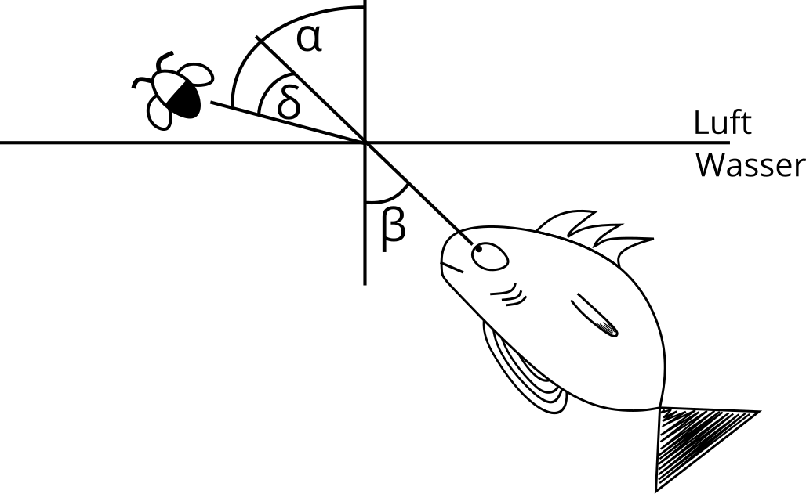
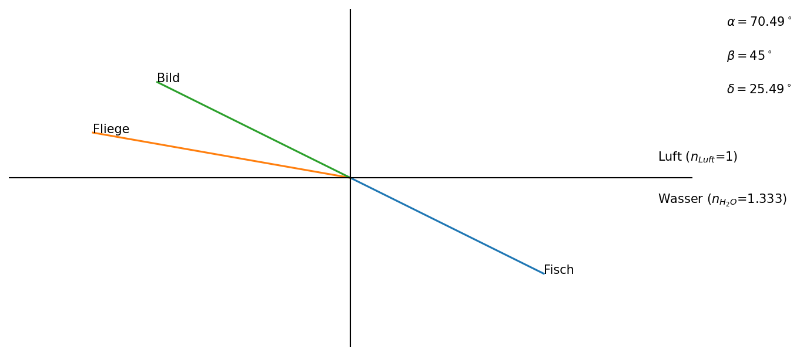

Schützenfisch Aufgabe¶
Gegeben:
\(n_{H_2O}\) = 1,333
\(n_{Luft}\) = 1
\(\vartheta\) = 20°C
\(\lambda\) = 589nm
Brechunggesetz:
\( n_{Luft} \cdot \sin(\alpha) = n_{H_2O} \cdot \sin(\beta) \)

import math
import matplotlib.pyplot as plt
import numpy as np
def calulate_alpha(beta):
if beta > 90 or beta < -90:
print(r'Ich glaube der Fisch liegt auf dem Trockenen. Damit der Fisch nicht aus dem Wasser hüpft halte beta unter 90° bzw. über -90°')
else:
sina, alpha = 0,0
sina = math.sin(math.radians(beta)) * 1.333
if sina < 1:
alpha = math.degrees(math.asin(sina))
else:
sina = 1
alpha = math.degrees(math.asin(sina))
return alpha
def plot_fisch_aufgabe(beta):
if beta > 90 or beta < -90:
print(r'Ich glaube der Fisch liegt auf dem Trockenen. Damit der Fisch nicht aus dem Wasser hüpft halte beta unter 90° bzw. über -90°')
else:
alpha = calulate_alpha(beta)
x, y, length = 0, 0, 8
beta1 = beta + 270
endbetay = length * math.sin(math.radians(beta1))
endbetax = length * math.cos(math.radians(beta1))
beta2 = beta1 - 180
endbeta2y = length * math.sin(math.radians(beta2))
endbeta2x = length * math.cos(math.radians(beta2))
alpha1 = alpha + 90
endalphay = y + length * math.sin(math.radians(alpha1))
endalphax = length * math.cos(math.radians(alpha1))
# plot the points
fig = plt.figure(num=None, figsize=(10, 5), dpi=150, facecolor='w', edgecolor='k')
ax = plt.subplot(111)
ax.set_ylim([-10, 10]) # set the bounds to be 10, 10
ax.set_xlim([-10, 10])
ax.plot([x, endbetax], [y, endbetay])
ax.text(endbetax, endbetay, 'Fisch')
ax.plot([x, endalphax], [y, endalphay])
ax.text(endalphax, endalphay, 'Fliege')
ax.plot([x, endbeta2x], [y, endbeta2y])
ax.text(endbeta2x, endbeta2y, 'Bild')
ax.axhline(y=0, xmin= -6, xmax= 15, color='black', linewidth=1)
ax.axvline(x=0, ymin= -6, ymax= 6, color='black', linewidth=1)
ax.text(9,1, 'Luft')
ax.text(9,-1.5, 'Wasser')
ax.text(11,9,r'$\alpha = $' + str(round(alpha,2)) + '$^\circ$')
ax.text(11,7,r'$\beta = $' + str(round(beta,2))+ '$^\circ$')
ax.text(11,5,r'$\delta = $' + str(round(alpha - beta,2))+ '$^\circ$')
plt.axis('off')
plot_fisch_aufgabe(beta = 40)
